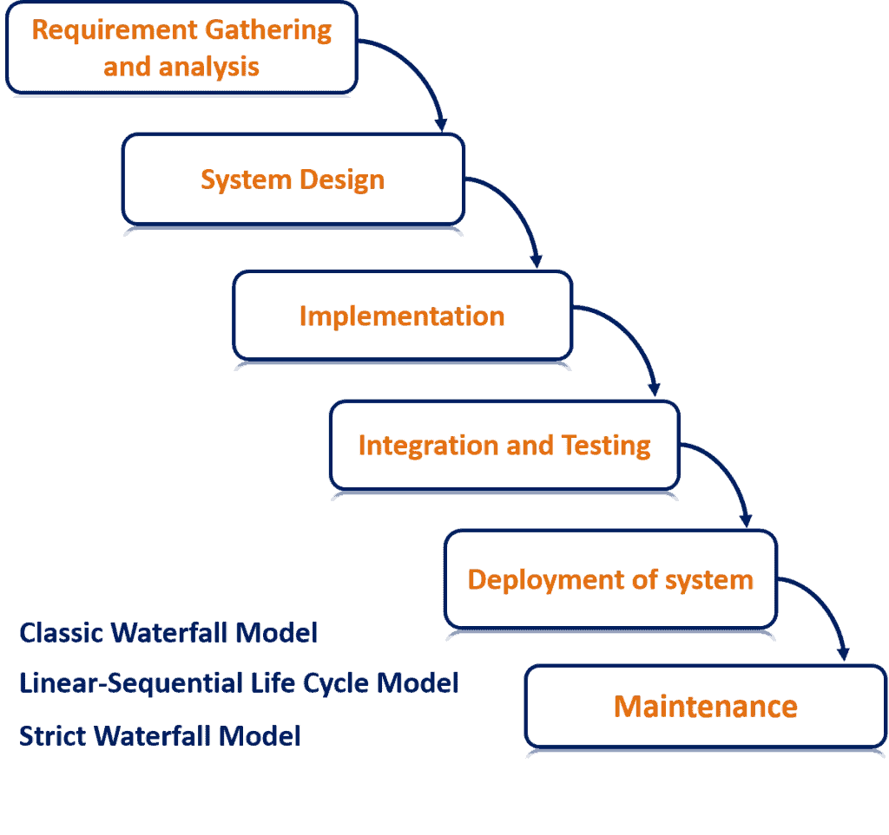
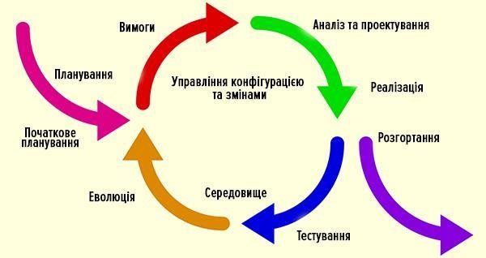

Модель життєвого циклу програмного забезпечення
Модель життєвого циклу програмного забезпечення - структура, яка містить процеси дії та завдання, які здійснюються в ході розробки, використання та супроводу програмного продукту.
Водоспадна модель (WATERFALL MODEL) - модель процесу розробки програмного забезпечення, в якій процес розробки виглядає як потік, послідовно проходить фази аналізу вимог, проектування, реалізації, тестування, інтеграції та підтримки. Перехід від однієї фази розробки до іншої відбувається тільки після повного та успішного завершення попередньої фази, і що переходів назад або вперед або перекриття фаз не відбувається.
V-образна модель - це покращена версія класичної каскадної моделі. Тут на кожному етапі
відбувається контроль поточного
процесу, для того, щоб переконатися в можливості переходу на наступний рівень. У цій моделі тестування
починається ще зі
стадії написання вимог, причому для кожного наступного етапу передбачений свій рівень тестового
покриття.
Для кожного рівня тестування розробляється окремий тест-план, тобто під час тестування поточного рівня,
ми також
займаємося розробкою стратегії тестування наступного. Створюючи тест-плани, ми також визначаємо
очікувані результати
тестування і вказуємо критерії входу і виходу для кожного етапу.
У V-моделі кожному етапу проектування і розробки системи відповідає окремий рівень тестування. Тут
процес розробки
представлений низхідною послідовністю в лівій частині умовної літери V, а стадії тестування - на її
правому ребрі.
Відповідність етапів розробки і тестування показано горизонтальними лініями.
Спіральна модель (spiral model) - є шаблоном процесу розробки ПЗ, який поєднує в собі ідеї
ітеративної та каскадної
моделей. Суть її в тому, що весь процес створення кінцевого продукту представлений у вигляді умовної
площини, розбитої
на 4 сектори, кожен з яких представляє окремі етапи його розробки: визначення цілей, оцінка ризиків,
розробка і
тестування, планування нової ітерації.
У спіральної моделі життєвий шлях розроблювального продукту зображується у вигляді спіралі, яка,
розпочавшись на етапі
планування, розкручується з проходженням кожного наступного кроку. Таким чином, на виході з чергового
витка ми повинні
отримати готовий протестований прототип, який доповнює існуючий білд. Прототип, що задовольняє всім
вимогам - готовий до
релізу.
Ітеративна модель (iterative model). Не всі моделі життєвого циклу послідовні. Існують також ітеративні (або інкрементальні) моделі, в яких використовується інший підхід. Замість однієї тривалої послідовності дій тут весь життєвий цикл продукту розбитий на ряд окремих міні-циклів. Причому кожен з них складається із все тих же базових стадій моделі життєвого циклу. Ці міні-цикли називаються ітераціями. У кожній з ітерацій відбувається розробка окремого компонента системи, після чого цей компонент додається до вже раніше розробленого функціоналу.
Agile - це комплексна методика організації процесу розробки ПЗ, яка включає в себе цілу сім'ю окремих підходів, або, як їх ще називають, фреймворків (Scrum, Kanban, Lean, DSDM, XP, FDD, Crystal). Вона використовує ітеративний підхід до управління проектами та розробки ПЗ, що дозволяє командам прискорити та організувати будь-який процес. Замість того щоб випускати весь продукт цілком, agile команда виконує роботу в рамках невеликих інкрементів. Вимоги, плани та результати постійно проходять перевірку на актуальність, завдяки чому команди можуть швидко реагувати на зміни. Основною сферою, де використовується Agile, є розробка програмного забезпечення. Але в сучасному світі Agile можна застосувати до будь-якої організації будь-якої галузі.
Agile Manifesto:
- Люди та співпраця важливіші за процеси та інструменти.
- Працюючий продукт важливіший за вичерпну документацію.
- Позитивна співпраця із замовником важливіша ніж обов'язки по контракту.
- Готовність до змін важливіша ніж дотримання плану.
Scrum - це методика, яка допомагає команді професіоналів організувати свою роботу максимально
ефективно. Як спортивна
команда готується до вирішальної гри (до речі, scrum - англ. «битва»), так і Scrum-команда повинна
отримувати уроки з
набутого досвіду, опановуючи принципи самоорганізації, працюючи над вирішенням проблеми, аналізувати
свої успіхи та
провали, щоб постійно вдосконалюватись. Scrum сприяє цьому.
Методику Scrum найчастіше застосовують команди розробників додатків, але принципи та досвід її
використання можна
застосувати до командної роботи будь-якого роду. Це одна із причин такої популярності методики. Учасники
команди Scrum
проводять збори, використовують спеціальні інструменти та беруть на себе особливі ролі, щоб організувати
роботу та
керувати нею.
Scrum - це методика роботи, а Agile - це спосіб мислення.